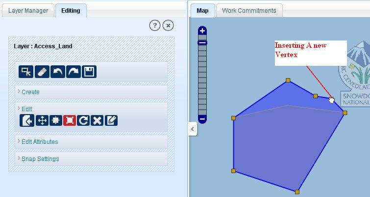
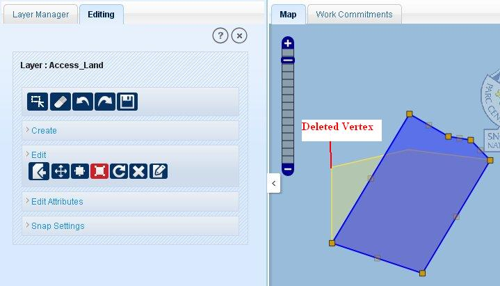
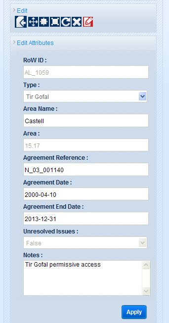
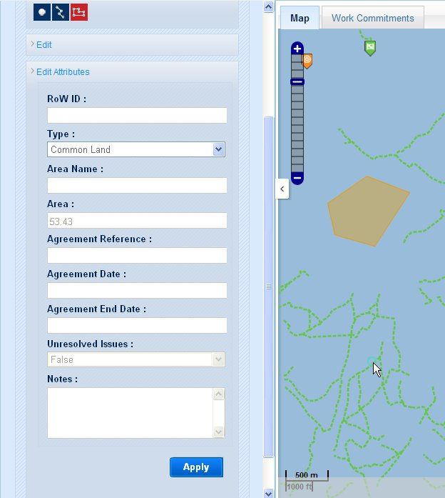
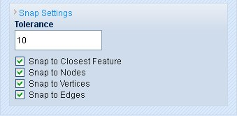

Editing functionality allows users to create new feature in selected layer (point, polygon and line). It also allows users to edit features of a layer. User can reshape, resize, move, rotate and delete features under editing functionality. Users are also allowed to edit attributes of features of selected layer.
Click on ‘Edit’ tool. Application shows a new tab ‘Editing’ in the left panel. This tab displays active layer’s name on the top, on which all the editing will be done. Below of this five tools: ‘Select’, ’Clear’, ’Undo’, ‘Redo’ and ‘Save’ are there. Below of these tools tab has four links:
Create: to create new features.
Edit: to edit existing features.
Edit Attributes: shows attributes fields and allows to edit attributes of the features.
Snap Settings: allows users to set snapping options to avoid gaps and overlaps.
General Tools
Select: This tool is used to select features for editing or snapping (selection of features changes them from WMS to WFS, since WMS features are not editable). To select feature/features, click on ‘Select’ tool and draw a rectangle on map at required location. The features of selected layer, covered by that rectangle will get selected.
Clear: This tool used remove features from the selection.
Undo: The undo tool allows user to undo the last activity in editing (except attribute editing).
Redo: Redo tool can be used after the use of undo tool. It redoes the activity that was last undone by user.
Save: Save tool allows users to save all the editing made by user. After editing features users must have to click on save button to remain the changes done.
Create links consists of the tools for creating new features in any layer. As user clicks on ‘Create’ link, it shows tools to make new features.
A feature can be created on a geometry compatible layer like if user wants to create a point feature, a point geometry layer should be selected. And if user tries to select a tool other than layer geometry application shows a pop-up message ‘Layer selected is not point/line/polygon (according to the tool used) type’.
- Point: To create a new point feature:
Select a layer which contains point geometry features in ‘Edit’ list box.
Click on ‘Create’ link and select point tool

from the tools available.
Click on the map canvas on required location. A point will be created at that location in the selected layer.
Click on ‘Save’ button to save that point.
- Line: To create a new line feature:
Select a line geometry layer in ‘Edit’ list box.
Click on ‘Create’ link and select ‘Line’ tool.
Click on required location, draw line and double click to finish the line.
Now click on ‘Save’ tool to save that line.
- Polygon: To create a new polygon:
Select a polygon layer in ‘Edit’ list box.
Click on ‘Create’ link. Select ‘Polygon’

tool.
Click on required location on map, draw a polygon as desired.
Double click on the end node of polygon to finish the polygon.
On successful creation of polygon click on the ‘Save’ button to save that polygon.
Edit functionality contains a list of tools to edit an existing feature.
Import Feature:
Import tool allows user to import feature from the Cosmetic layer to selected layer. A markup can be imported to selected layer if the selected markup is layer compatible feature i.e. the selected markup geometry must be as the selected layer’s geometry. To import a feature, click on import tool and click on that markup feature. Then click on ‘Save’ tool. Now that markup can be seen in the selected layer.
Move:
Move tool facilitates users to move a selected feature to a desired location on map.
To move a feature, make its layer as active layer.
Click on ‘Edit’ link.
Click on select tool and select a feature by drawing a rectangle on map. The selected features will be highlighted.
Click on ‘Move’ tool.
Click on the required feature among the selected features. Application shows a node.
Click on that node and without releasing the mouse button, move that node to required location. Then click in save button. Here user can use ‘Undo’ tool before saving the changes.
Resize:
Resize tool allows users to change the size of a feature (except points). For resizing a feature:
Click on ‘Edit’ link. Select feature/ features by ‘Select’ tool.
Click on ‘Resize’ tool in edit and click on the feature. Application shows a node for resizing.
Click on that node and without releasing mouse button move the node towards to feature to make the feature smaller or move away from the feature to make its size larger and release mouse button on desired size.
Click on ‘Save’ button to save the changes.
Reshape:
Reshape tool allows users to change the shape of the features (except point features). In reshape tool user can move an existing vertex of the feature or insert a new vertex or delete an existing vertex.
Click on ‘Select’ tool and select that feature. Now click on ‘Reshape’ tool.
Click on that features. All the vertices will highlighted with that feature.
Now user can click any of the vertices and move it to a required location.
To insert a new vertex, user has to click on the mid-point of two vertices and move it required location. Midpoint of every segment is also highlighted but with lower visibility.
To delete a vertex from the feature, keep the cursor on that vertex and press ‘Ctrl+Delete’.
After doing all the changes, click on ‘Save’ button to save editing.

Fig.1 Insertion of new vertex

Fig.2 Deletion of Vertex
Rotate:
Rotate tool allows users to rotate a feature (except point features) clockwise or anti-clockwise.
Click on ‘Select’ tool and select that feature.
Click on ‘Rotate’ tool and click on selected feature. A node will be shown in the map near to feature.
Click on that node and without releasing mouse button move it clockwise or anti-clockwise as required. Release the mouse button after rotating feature to required angle.
Now click on ‘Save’ button to save the changes.
Remove Feature:
Remove  feature functionality allows users to delete a feature permanently from layer. User can remove any type of features (point/polygon/line).
feature functionality allows users to delete a feature permanently from layer. User can remove any type of features (point/polygon/line).
Click on ‘Select’ tool and select that feature.
Click on ‘Edit’ link (if not expanded) and select ‘Remove Feature’ tool.
Now click on that feature. Application will show a pop-up message to confirm the deletion of that feature.
Click ‘Ok’ to confirm or ‘Cancel’ to go back without deleting feature.
As user clicks ‘Ok’ on that pop-up message, that feature will be highlighted.
Now click on ‘Save’ tool to remove the feature from layer and server.
Edit Attribute:
Edit attribute tool allows users to edit attributes of a selected feature. The fields of a selected feature will be shown in the link ‘Edit Attributes’ in the left panel. User can expand this link by clicking on it. Or it will be expended by application while using edit attribute tool.
To edit attributes of a feature, click on ‘Select’ tool and select feature on map.
Click on ‘Edit Attribute’ tool and click on the selected feature.
Application will expand the link ‘Edit Attributes’ (if it is not opened already). All the editable attributes will be shown in that list.
Edit required fields by clicking on the text boxes of those attributes.
After editing the attributes, click on ‘Apply’ button on the ‘Edit Attributes’ link.
And to save these changes, click on ‘Save’ button.

Fig.3 Editing Attributes of Access Land
This link is related to ‘Edit’ and ‘Create’ links. And this functionality can be used only if user want to edit attributes of a feature through ‘Edit Attributes’ tool in ‘Edit’ link or when user want to create a new feature. The two uses of this functionality are described below:
When user creates a new feature under any layer:
After creating feature successfully, application expands Edit Attribute link with blank attribute fields.
User can fill the attribute details of new feature here.
After completing the attribute filling, click on ‘Apply’ button and then click on ‘Save’ tool.
If mandatory fields are not filled, on clicking ‘Apply’ button these fields will be marked with pink colour. The new feature will be saved with the attribute details.

Fig.4 New Feature's Attribute
The other use of this functionality is to edit attributes of existing features:
To edit attributes, select the feature first by ‘Select’ tool.
Click on ‘Edit Attributes’ tool.
Click on that feature. Attributes of that feature will be shown in left panel in ‘Edit Attributes’ link.
Edit desired fields then click on ‘Apply’ button.
Click on ‘Save’ tool to save all these changes.
Snap Settings functionality allows user to avoid gaps and overlaps while creating features or reshaping a feature. To activate the snap functionality the features should be in selected mode to those a new feature or an editing feature going to be snapped. Click on the ‘Snap Settings’ and applications shows a ‘Tolerance’ spin box where user can set (decrease/increase) the tolerance for snapping. Below this, four options are available with checkboxes. The list of options is:
Snap to Closest Feature
Snap to Nodes
Snap to Vertices
Snap to Edges
By default all these four options are marked.

Fig.5 Snap settings
User can set the options according to his preferences.
If he wants to snap on larger tolerance, increase the tolerance value for snapping in the spin box.
First of the four options is to deactivate all other snap settings. If user un-marks the check box of ‘Snap to Closest Feature’ check box, all the check boxes will be unmarked.
‘Snap to Nodes’ is used to snap to nodes of nearest line feature under specified tolerance.
‘Snap to Vertices’ can be used to snap to the vertices of a feature under given tolerance.
‘Snap to Edges’ allows user to snap to edges of nearest feature under the specified tolerance.
To remove snapping, either set the tolerance at 0 or unmark the check box of ‘Snap to Closest Feature’.